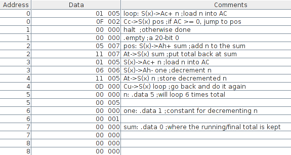
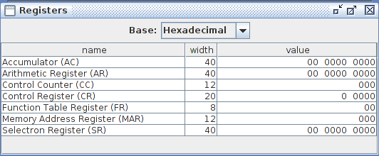

24. Simulador IASSim
24.1. Máquina Virtual Java JVM
-
Instalar el Kit de Desarrollo Java (Java Development Kit-JDK) en el sistema ubuntu
-
openjdk-11-jdk en la distribución linux/GNU ubuntu 18.0 bionic.
-
Comprobar que se tiene acceso al paquete:
apt-cache search openjdk-11-jdk -
Instalar el paquete:
sudo apt-get install openjdk-11-jdk -
Comprobar que está instalado el paquete:
dpkg -l openjdk-11-jdk -
Comprobar la versión de java instalada:
java --version
-
-
datos de la instalación en Ubuntu 17
Date: September 15, 2017. Emulator version: IASSim2.0.4 Emulator command: java -cp IASSim2.0.4.jar:jhall.jar:IASSimHelp2.0.jar iassim.Main -m IAS.cpu Operating System: GNU/linux Distributor ID: Ubuntu Description: Ubuntu 17.04 Release: 17.04 Codename: zesty Java version: openjdk version "1.8.0_131" OpenJDK Runtime Environment (build 1.8.0_131-8u131-b11-2ubuntu1.17.04.3-b11) OpenJDK 64-Bit Server VM (build 25.131-b11, mixed mode)
24.2. Simulador IAS
-
IASSim : Herramienta de simulación de la computadora IAS de Von Neumann útil para la simulación de la ejecución paso a paso de las instrucciones de un programa en código máquina. Permite visulalizar el contenido de la memoria principal Selectron y de los registros de la CPU al finalizar cada ciclo de instrucción.
-
Colby IASSim Web : Al hacer click nos conectamos al repositorio del simulador IASSim.
-
Descargar el Simulador IASSim2.0.4 : archivo zip
-
Descomprimir el archivo IASSim2.0.4.zip.
-
-
Abrir el Simulador mediante el comando:
-
../IASSim2.0.4$
java -cp IASSim2.0.4.jar:jhall.jar:IASSimHelp2.0.jar iassim.Main -m IAS.cpu-
En Windows se puede hacer doble click sobre el archivo por lotes con extensión .bat.
-
-
24.3. Simulación/Depuración
-
Los objetivos de la simulación son dos:
-
Interpretar la ejecución de cada instrucción observando como varía la memoria y los registros
-
Depurar posibles errores en el desarrollo del programa.
-
-
Es necesario conocer la codificación hexadecimal de los números enteros y su conversión a código binario.
-
Al programa Demo tutorial.ias que viene con el propio emulador le llamaremos sum1toN.ias
-
El archivo zip descargado ha debido de ser descomprimido: observar los archivos extraídos, uno de ellos son las instrucciones de apertura del emulador.
-
Abrir el emulador:
-
En linux mediante el comando en línea:
java -cp IASSim2.0.4.jar:jhall.jar:IASSimHelp2.0.jar iassim.Main -m IAS.cpu -
En windows: Doble click en el archivo por lotes con la extensión *.bat
-
-
Ayuda:
Help → General IASSim Help → Assembly Language → Sintaxis y Regular Instructions: manual del lenguaje ensamblador -
Borrar el contenido de la memoria tanto interna como externa.
Execute → Clear all -
Desactivar el modo depuración :
Execute → Debug Mode NO seleccionado -
Cargar el programa sum1toN.ias en lenguaje ensamblador :
File → Open → sum1toN.ias-
Lenguaje ensamblador: creado por los autores de la aplicación IASSim.
-
-
Ventana RAM Selectrons: direcciones y contenido en código hexadecimal,decimal,binario… Anchura memoria : 20 ó 40 bits.
-
Seleccionar la ventana con el código fuente en lenguaje ensamblador.
-
Ensamblar y Cargar el módulo ejecutable en memoria :
Execute → Assemble & Load -
Analizar el mapa de memoria : sección de instrucciones y sección de datos
-
Activar el modo depuración :
Execute → Debug Mode -
Ejecución de cada instrucción paso a paso :
Step by Step
-
-
Contenido de la Memoria
-
La primera instrucción está almacenada en los 20 bits de la izda de la posición de memoria y la segunda instrucción en la dcha.
Figure 107. IAS Codigo Maquina
-
-
Contenido de los Registros:
Figure 108. IAS Registros -
Ejercicio:
-
Antes de la ejecución de cada instrucción interpretarla: interpretar la instrucción en lenguaje máquina.
-
preveer el nuevo contenido de la sección de datos de la memoria
-
preveer el nuevo contenido de los registros de la CPU.
-
preveer la próxima instrucción a ejecutar
-
Deducir el organigrama del programa.
-